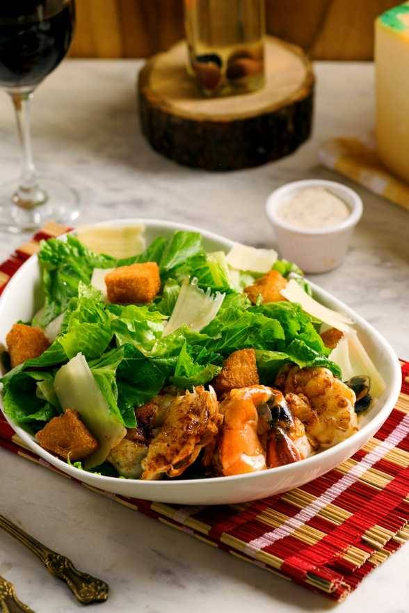
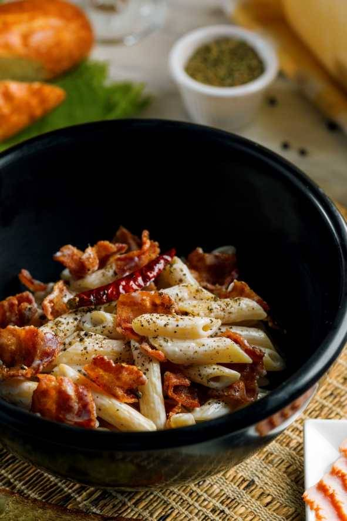

19 creators served across Andreas Dining's Delhi activation, with combined tracked reach of 2.24M and 6 verified handles. The IG highlight reflects nine deeply-served creators (1.97M reach); 98's broader calendar includes ten additional creators served via direct deliverables, brand-grid reshares, and magazine-style inspo placements.


Andreas Dining is a Delhi institution where the brand grammar is set by the room — refined European plating, soft lighting, the kind of interior that reads as a magazine spread before it reads as a restaurant. The brief to 98 was to make Andreas the default 'inspo backdrop' for Delhi's content audience.
98 ran a multi-channel Andreas activation: 9 creators captured through the IG-highlight channel (reach 1.97M including 5 verified — Saanya Khatter 533K, Aishwarya Sharma/Figura Moda 466K verified, Unnati Malik 311K verified, Ishita Anand 240K verified, Vageesha Bahel 152K verified). Plus 5 additional creators served via direct deliverables and inspo-grid placements where 98's work shipped without a host-brand reshare on the IG highlight. Naming each tier separately keeps the case honest about the scope of 98's work versus the visibility it achieved on a single channel.
Andreas Dining · Delhi.
Multi-channel creator activation · IG highlight + inspo grid + direct deliverables.
98 Entertainment — discovery-led relaunch casting for Andrea's Eatery, Saket.
Standardised tag stack (@andreasdining + @98.entertainment + Delhi geo-pin) across IG visits. Off-highlight deliverables routed through 98's roster + PR channels.
Refined-dining venues face a particular creator-marketing problem: the room is the asset, but the room reads better in stills than in reels. A standard creator stack tuned for energy-and-volume content under-uses the venue. Andreas needed creators whose own grammar valued frame composition, light, and quiet — and a delivery channel beyond just the IG story repost.
Refined dining needs refined creator work.
Multi-channel scope · honest scope.
Marquee creators selected for frame composition and stillness, not just reach numbers. The room sets the bar.
Highlights, inspo posts, magazine-style placements, direct creator deliverables — Andreas's case study counts work across all four, not just the IG highlight surface.
Where 98 served creators outside the host-brand reshare channel, we name them — handles where confirmed, names where pending. Honest scope reads stronger than inflated numbers.
The marquee + supporting roster below reflects creators captured on @andreasdining's IG highlight — 9 creators, 43 story frames, 5 verified. Verticals covered: Public figure · digital creator · UGC · lifestyle · fashion.
Soundtrack lock: Cinematic European · slow plate
Saanya's 532K public-figure feed made the revamp news without a press note — the room reopened in front of an audience that already trusted her evenings.
An evening in the new room in her social register — table, interiors, tags to @andreasdining.
Her post was the relaunch's announcement layer — discovered, not declared.
@figuramoda's fashion-first feed read the revamp as a look — the register that fills a redesigned room with the crowd it was redesigned for.
'Let the cheer season begin' — cocktails raised over the marble, the green and amber glasses catching the room's new light.
Her cheers frame gave the relaunch its season-opening mood; the venue leaned on it through December.
Unnati's discovery audience turned the reopening into saves and shares — the compounding layer under the announcement posts.
Plate-forward frames and stories, captioned for search, tagged through the stack.
Her material carried the relaunch's second week, when announcements fade and search takes over.
Ishita's digital-native feed widened the discovery pool around the launch window — young Saket, weekend-brunch intent.
Reel plus stories through the revamped room — dessert tiers, the banquettes — tagged @andreasdining.
Her set fed the drumbeat the two-week window was paced around.
Vageesha's close-range feed supplied the word-of-mouth tier — the friend-recommendation register a neighbourhood institution reopens into.
Stories from her visit in the direct register small feeds do best — the room, the plates, the tags.
The long tail made the relaunch ambient: one more real person, back at Andrea's.
The wider roster visited across two spaced weeks behind the five above — hosted on arrival, reposted into the owned highlight.
| Handle | Followers | Name · Role | |
|---|---|---|---|
| @thedemodakudi | 114K | Vanshika Chhabra · Digital creator | |
| @muskaanmakol | 55K | Muskaan Makol · Lifestyle | |
| @nanditamiglani | 52K | Nandita Miglani · UGC creator | |
| @harnoor.kapoor | 51K | Harnoor Kaur Kapoor · Digital creator · Toronto |
Beyond the IG-highlighted roster above, 98 served additional creators across Andreas's calendar through direct visits, reposts, and inspo-grid placements. The names below were captured via 98's internal client folders and post-archive — some reach numbers verified against current IG profiles, others marked as pending where handles haven't been reconciled to current accounts.
Why this matters. A creator-marketing case study told only through one channel (the host brand's IG highlight) under-represents the actual scope. 98's Andreas activation lived across creator-feed posts, brand-grid reshares, magazine-style inspo placements, and direct creator deliverables — not all of which surface on a single highlight reel.
| Handle / Name | Followers | Name · Role | |
|---|---|---|---|
| @geetikadhama | 92K | Geetika Dhama · Lifestyle · LDN | |
| @rashmi_chawla_ | 88K | Rashmi Chawla · Digital creator | |
| @_sukku_ | 55K | ✓ V | Sukriti · Lifestyle |
| @shrutimalikk | 28K | Shruti Malik · Author | |
| @akshitaajindal | 1.2K | Akshita Jindal · Reel creator | |
| Tanya Sharma Bajaj | — | Handle pending verification · contemporaneous frames in archive | |
| Nupur Satija | — | Handle pending verification · contemporaneous frames in archive | |
| Ruvika Bajaj | — | Handle pending verification · contemporaneous frames in archive | |
| Kirandeep Kaur | — | Handle pending verification · contemporaneous frames in archive | |
| Bhumi | — | Handle pending verification · contemporaneous frames in archive |
98 ran the Andreas Dining activation as a multi-channel four-stage operation: brief and concept, talent matching across IG + inspo + direct delivery, choreography on visit days, and asset handover into the brand's grid + 98's roster archive.
| Stage | Owner | Detail |
|---|---|---|
| Strategy | 98 strategy | Multi-channel delivery design · IG highlight + inspo grid + direct deliverables. |
| Talent | 98 talent management | 9 IG-marquee + 10 off-highlight roster · ~6 working weeks calendar. |
| Production | 98 production + Andreas team | Editorial-grade cinematography brief · plate + interior frame discipline. |
| Asset Handover | 98 → Andreas | IG masters + inspo-grid library + direct creator-feed handoffs. |
The Andreas activation produced four distinct asset classes spanning host-brand reshares, brand-grid magazine placements, and direct creator-feed deliverables.
Andreas is 98's case for multi-channel delivery and honest scope. A single-channel audit (IG host-brand highlight) shows nine creators; 98's actual Andreas calendar served nineteen. The case study reflects both — the IG-mined roster as the deeply-tracked tier, plus the off-highlight roster as the additional 98 work shipped across inspo grid, magazine placements, and direct creator deliverables.
Creators found the revamped room in their own voice; the launch was assembled from their stories. No press release was issued at any point.
98 Entertainment · ninety-eight.in · @98.entertainment